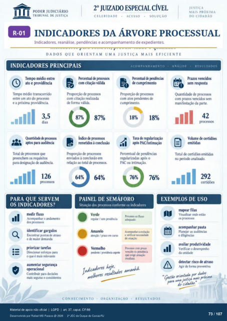

Transcrição automática em português, ainda não revisada. Confira grafia, prazos e termos jurídicos na imagem e no PDF antes de utilizar.
INDICADORES DA ÁRVORE PROCESSUAL
Indicadores, reanálise, pendências e acompanhamento de expedientes.
DADOS QUE ORIENTAM UMA JUSTIÇA MAIS EFICIENTE
INDICADORES PRINCIPAIS
ACOMPANHAMENTO
Percentua ver±cias cumprimento
Proprçáo de com atos pendentes de
cumprimento. Taxa de regularização
PACIintimaçáo Percentual de Fndências
regulariüKias o PAC ou intimação.
ANÁLISE
RESULTADOS
Temp rnédio entre l. atoe providência
Temp médio entre um ato do processo
e a próxima providência. 3,5
dias aptos para audiência
Total de processos que preenchem os requisitos
para designação audiência. 126
PARA QUE SERVEM
OS INDICADORES?
medir fluxo Acompanhar o andamento
dcs paxessos identificar gargalos
Encontrar pontos de atraso e maior demanda
priorizar tarefas Direcionar esforços para
0 que é mais relevante aumentar segurança
OFracionaI Contribuir para decisões
mais seguras e consistentes Perentual prrressos
com citação válida Proporção de prcxes*S
com citação realizada de forma válida.
índi« de prtxessos Proprçáo de processos
à conclusão em relação ao total de prxessos.
Prazos vencidos Quantidade de
com prazos vencidos sem manifestaçü) da prte.
42 Volume certi&s
emitidas Total de emitidas
no Frio analisado. 292
76%
PAINEL DE SEMÁFORO
Situação dos conforme os indicadores 76%
EXEMPLOS DE USO
Verde regular sem Fnd&ria
Amarelo atençú' I Fazo em
—tte J Prtx.so fluxo
e verificar atuaçàa
Prtxesso cm verrido ou
qtr exige atuaçio para
CONHECIMENTO
ORGANIZAÇÃO
RESULTADOS
maFar filas Visualizar onde estio
os acompanhar pauta
Planejar as audiências e dili*ncias
avaliar prtxiutividade Verificar o cksernFnh0
da unidade detectar risco de atraso
Agir forma preventiva Orientada por dados
m:is do cidadio.
Ver também o infográfico original (página 73)
